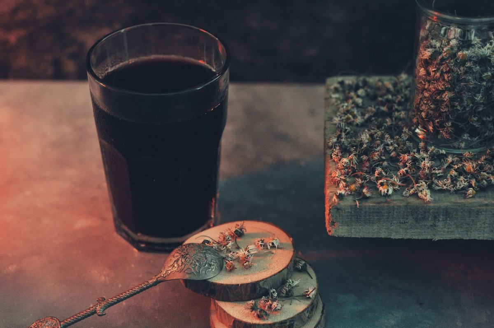
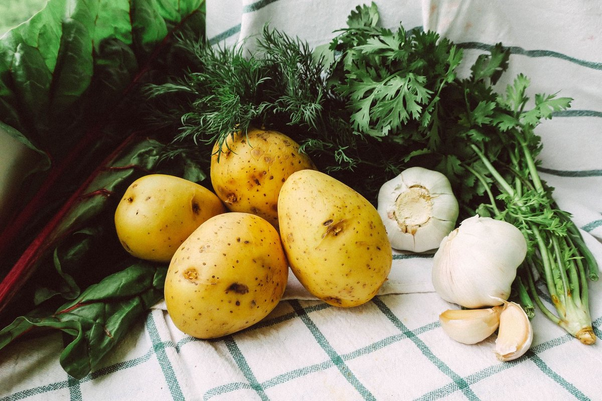

Taking Antibiotics? Sugar May Be Making The Damage Worse

Key takeaways
- Two years ago, I walked out of an urgent care clinic clutching an amoxicillin prescription and promptly bought a giant blueberry muffin to cheer myself up.
- I thought I was nursing a sinus infection with comfort food, but within forty-eight hours, my stomach fe
- Track what feels sustainable and adjust gradually.
Two years ago, I walked out of an urgent care clinic clutching an amoxicillin prescription and promptly bought a giant blueberry muffin to cheer myself up. I thought I was nursing a sinus infection with comfort food, but within forty-eight hours, my stomach felt like an inflated balloon. If you are currently taking antibiotics, sugar may be making the damage worse than you realize.
We already know that broad-spectrum prescriptions act like a controlled burn across our internal ecology. What nobody tells you in the pharmacy drive-thru is that refined sugar pours lighter fluid directly onto that smoldering terrain.
When antibiotics eliminate beneficial species like Bifidobacterium, opportunistic pathogens seize the empty physical space. Yeasts like Candida albicans thrive in this vacuum, and their favorite fuel source is simple glucose. By loading up on sweet tea or cookies while medicated, you unintentionally hand those bad bugs an all-you-can-eat buffet. For broader context on daily balance, check out this related healthy tip.
During my own recovery, I realized that sugar does not just feed yeast; it also alters bacterial virulence. Certain lingering pathogens actually turn more aggressive in high-glucose environments, forming stubborn biofilms that resist clearance.
Meanwhile, the beneficial microbes struggling to survive need slow-fermenting prebiotic fibers, not rapid spikes of high-fructose corn syrup. When I swapped out breakfast pastries for unsweetened kefir and steamed carrots, my chronic post-antibiotic bloating finally vanished. You can cross-reference this approach with another practical guide to rebuild gut stamina.
Pro-Tip: Keep fresh ginger slices in your water bottle instead of sweetened sports drinks; ginger eases nausea naturally without spiking blood glucose.
Instead of aiming for ascetic perfection, focus on simple food swaps during your medication cycle. Trade sweet yogurts for plain Greek yogurt topped with raw pumpkin seeds or berries.
You can also lean on bone broth or herbal teas when comfort cravings hit, which I talk about in a similar wellness insight. Keeping daily glucose levels steady protects the fragile intestinal mucosal lining from further degradation while you heal.
The 2-Minute Win
Audit your pantry right now and hide the candy, flavored yogurts, and sodas; replace them with unsweetened electrolyte powders and cold green tea to sip during your antibiotic regimen.
Recovery is not an overnight sprint, but keeping glucose low buys your natural defenses crucial recovery time. If you want to stay consistent with this, prep batch meals featuring cooked lentils, leafy greens, and wild-caught salmon before starting tough prescriptions.
Be gentle with yourself as you navigate the fatigue that often accompanies illness. Take time to explore more gut guides as you gradually restore digestive resilience.
Educational only — not medical advice.
Recommended Reading
- What Nobody Tells You About High Protein Breakfast
- What Nobody Tells You About The Whole Grain Sweet Spot
- The Ultimate Guide to Daily Hydration: Boost Energy & Wellness
More in gut

gutA Realistic Feeding Our Gut Microbiome For Better Health Plan
Discover a realistic guide to feeding our gut microbiome for better health. Simple, science-backed tips that fit your bu
Read article → gut
gutWhat Nobody Tells You About Budget Meal Prep
Discover realistic budget meal prep strategies for US families that save money, reduce stress, and protect your family's
Read article →Related posts
A Realistic Feeding Our Gut Microbiome For Better Health Plan
Discover a realistic guide to feeding our gut microbiome for better health. Simple, science-backed tips that fit your bu
Read article →gutWhat Nobody Tells You About Budget Meal Prep
Discover realistic budget meal prep strategies for US families that save money, reduce stress, and protect your family's
Read article → gut
gutFix A Hidden Compound In Healthy Foods May Worsen Ibd Fast
Discover how a hidden compound in healthy foods may worsen Ibd and learn 4 practical ways to calm your gut naturally sta
Read article →